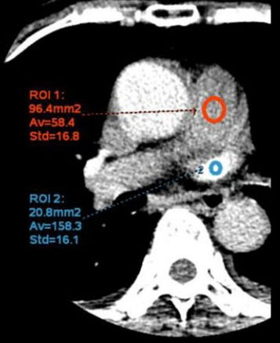

Precision Timing System for CT Pulmonary Angiography (Bae & Wu et al. Protocols)
Bae's Standard Formula:
TPEAK = TID + TARR - 5.3 | TDELAY = TPEAK - ½ TSD
Source: Read from single-ROI MPA curve. Second when HU begins to sharply rise.
Standardized Protocol: Programmed flow rate set on dual-head power injector (4.5 mL/s).
Standard Protocol: Fixed at 30 mL diagnostic bolus (+ 35 mL saline chaser).
Source: Read total acquisition time from CT diagnostic protocol card.
Wu et al. Biphasic Formula (2020):
TDELAY = TCROSS - TSD
Protocol: 5 mL Test + 15 mL Diagnostic (+ 35 mL saline chaser @ 4.5 mL/s)
Source: Read from dual-ROI graph. Second where MPA curve and PV curve intersect.
Source: Read total chest acquisition time from CT diagnostic protocol card.

Figure: Anatomical ROI Placement & Time-Density Curves (TDC) for CTPA Timing.
1. Bae Equation Method (Single Vessel): Axial CT image demonstrating a single circular ROI located in the Main Pulmonary Artery (MPA, red). The single-line TDC curve identifies peak contrast arrival time (TARR).
2. Wu et al. Method (Dual Vessel): Axial CT image showing dual ROIs placed in the MPA (red) and Pulmonary Vein (PV, blue). The biphasic TDC tracks arterial and venous enhancement, identifying the intersection time (TCROSS) prior to venous contamination.
1. Draw ROI 1 (Red) inside MPA trunk (~80-100 mm²).
2. Generate single Time-Enhancement Curve (TEC).
3. Identify TARR (second when HU begins rapid rise).
1. Draw ROI 1 (Red) inside MPA trunk.
2. Draw ROI 2 (Blue) inside Pulmonary Vein (~20 mm²).
3. Generate Biphasic Curve.
4. Identify TCROSS (intersection point of Artery & Vein curves).